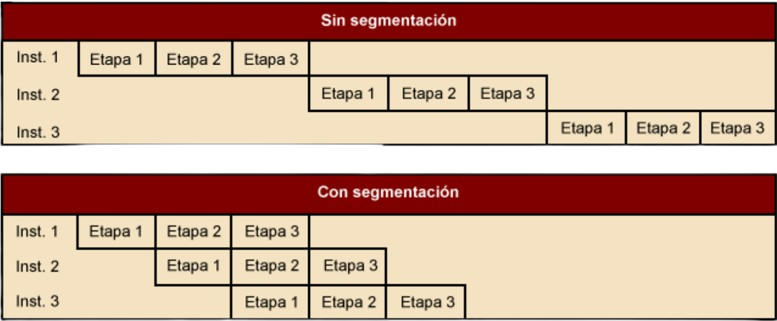

ARQUITECTURA DE COMPUTADORAS
La Unidad Central de Procesamiento o CPU es un componente electrónico en forma de chip fundamental para todo equipo de computo, comúnmente está instalado sobre la placa base a través de un socket o zócalo; es importante recordar que su principal función es realizar todos los cálculos aritméticos lógicos que generan los programas y el sistema operativo alojados en el disco duro o almacenamiento central. La CPU toma las instrucciones desde la memoria RAM para procesarlas y posteriormente enviar la respuesta de nuevo a la memoria RAM, de esta forma se crea un flujo de trabajo con el que puede interactuar el usuario.
La organización del procesador es la forma en que los componentes y circuitos del procesador son interconectados y coordinados. Estos componentes son los siguientes:
Los registros son, elementos de memoria de acceso rápido que se encuentran dentro del procesador. Constituyen un espacio de trabajo para el procesador y se utilizan como un espacio de almacenamiento temporal. Se implementan utilizando elementos de memoria RAM estática (static RAM). Son imprescindibles para ejecutar las instrucciones, entre otros motivos, porque la ALU solo trabaja con los registros internos del procesador.
Los registros y la organización que tienen cambia de un procesador a otro. Una parte de los registros pueden ser visibles para el usuario y otra solo se utiliza en el control y estado interno del procesador.
Los registros visibles para el usuario son un conjunto de registros que pueden ser accedidos directamente por los programas que se ejecutan en la CPU, son una parte importante de la arquitectura de la CPU, ya que son utilizados por los programas para almacenar temporalmente datos que se están procesando y se pueden dividir en dos categorías principales:
Los registros de control son utilizados por la unidad de control para controlar el funcionamiento de la CPU y por programas privilegiados del sistema para controlar la ejecución de programas; regulan la ejecución de instrucciones, controla que no existen desfases entre operaciones del CPU y permiten controlar estados en estos registros se almacena la información generada por la unidad de control y también información específica para el sistema operativo.
De forma general se utilizan para la transferencia de datos entre la CPU y la memoria. Dentro de la CPU, los datos tienen que ofrecerse a la ALU para su procesamiento. La ALU puede tener acceso directo al de datos y a los registros visibles al usuario. Como alternativa, puede haber registros intermedios adicionales en el límite de la ALU; estos registros sirven como registros de entrada y salida de la ALU e intercambian datos con el de datos y los registros visibles al usuario.
Todos los diseños de la CPU incluyen un registro o conjunto de registros de estado del programa (PSW), los cuales contienen información de estado, normalmente son códigos de condición, además de otra información de estado. Entre los campos o indicadores se incluyen los siguientes:
En el diseño de la organización de los registros de control y estado hay factores que se tienen que tomar en cuenta, como el soporte el sistema operativo. Algunos tipos de información de control son de utilidad específica para el SO. Si el diseñador de la CPU posee una comprensión funcional del SO que se va a utilizar, la organización de los registros puede adaptarse, hasta cierto punto, a ese SO.
La CPU tiene 14 registros internos, cada uno de 16 bits.
Motorola MC68000
El Motorola MC68000 distribuye sus registros de 32 bits en ocho de datos y nueve dedirecciones. Los ocho registros de datos se usan principalmente para manipulación de datos y también se usan en direccionamiento como registros índice.
Intel 8086
En el Intel 8086 cada uno de los registros tiene un uso especial, aunque algunos registros se pueden emplear también para un uso general. Contiene cuatro registros de datos de 16 bits que son direccionables y cuatro registros punteros e índices de 16 bits. Los registros de datos pueden utilizarse como de uso general en algunas instrucciones. En otras, los registros se usan implícitamente.
Intel 80386
El Intel 80386 es un microprocesador de 32 bits diseñado como una ampliacion del 8086 16 bits, contiene los ocho registros de 32 bits de propósito general que se utilizan para el cálculo de direcciones y operaciones con datos y un barrel shifter de 64 bits que se utiliza para acelerar las operaciones de desplazamiento, rotación, multiplicación y división, un registro de indicadores, seis registros de segmento de 16 bits que mantienen valores de selectores de segmentos identificando los segmentos que se pueden direccionar, tres registros de control de 32 bits que mantienen el estado de la máquina que afecta a todas las tareas en el sistema, cuatro registros de direcciones de sistema para referenciar tablas o segmentos, seis registros de depuracion que simplifica la depuración de programas y dos registros de test para verificar el funcionamiento del RAM/CAM (Content Addressable Memory) en el buffer de conversión por búsqueda (TLB) de la unidad de paginado.
Un ciclo de instrucción es el período que tarda la unidad central de proceso en ejecutar una instrucción de lenguaje máquina, Comprende una secuencia de acciones determinada que debe llevar a cabo la CPU para ejecutar cada instrucción en un programa. Cada instrucción del juego de instrucciones, puede requerir diferente número de ciclos de instrucción para su ejecución. Un ciclo de instrucción está formado por uno o más ciclos máquina.
El Ciclo Fetch-Decode-Execute es una serie de fases encargada de ejecutar un programa en una computadora es el CPU, y lo hace mediante el ciclo Fetch-Decode-Execute, y con él se realizan todas las tareas posibles. Está conformado por las siguientes etapas:
Al ser un ciclo, estos pasos se van repitiendo una y otra vez con las diferentes instrucciones que se le dan a la computadora.
Es una técnica que consiste en dividir el ciclo de ejecución de las instrucciones en un conjunto de etapas. Estas etapas pueden coincidir o no con las fases del ciclo de ejecución de las instrucciones.
El objetivo de la segmentación es ejecutar simultáneamente diferentes etapas de distintas instrucciones, lo cual permite aumentar el rendimiento del procesador sin tener que hacer más rápidas todas las unidades del procesador y sin tener que duplicarlas.
El conjunto de instrucciones es un juego de instrucciones que tiene programadas el microprocesador y que es capaz de ejecutar, El término describe los aspectos del procesador generalmente visibles, incluyendo los tipos de datos nativos, las instrucciones, los registros, la arquitectura de memoria y las interrupciones, entre otros aspectos. Existen dos arquitecturas completamente diferentes en las que se basan los microprocesadores actuales.
Los modos de direccionamiento son las diferentes maneras de especificar un operando dentro de una instrucción en lenguaje ensamblador, cada forma especifica la forma de calcular la dirección de memoria efectiva de un operando mediante el uso de la información contenida en registros y/o constantes, contenida dentro de una instrucción de la máquina o en otra parte, existen los siguientes tipos:
En el Motorola 68000 el mismo direccionamiento lleva implícito el tipo de registro sobre el que trabaja (direcciones o datos). Está basado en dos bancos de 8 registros de 32 bits. Un banco es de datos (Dn) y el otro de punteros (An). Además contiene un contador de programa de 32 bits y un registro de estado de 16 bits. Los registros de datos (D0 a D7) se pueden usar como registros de 32 bits (.l), 16 bits (.w) y 8 bits (.b). Cualquiera de ellos puede usarse como acumulador, índice o puntero.
Los modos de direccionamiento del 8086 (Crawford & Gelsinger, 1987) son muy irregulares. Los registros del procesador, se usan para contener los datos con que se está trabajando puesto que el acceso a los registros es mucho más rápido que los accesos a memoria. Se pueden realizar operaciones aritméticas y lógicas, comparaciones, entre otras. Hay un campo para un registro (reg), que especifica uno de los operandos, y otros dos campos (mod y r/m) para el otro.
Los modos de direccionamiento del Intel i3 se basa en que un modo de direccionamiento especifico busca forma de calcular la dirección de memoria efectiva de un operando usando información contenida en registros, constantes o una instrucción de la maquina o en otra parte.
Intel Corporation es una empresa estadounidense especializada en la fabricación de microprocesadores, chips y otros componentes electrónicos para ordenadores y dispositivos móviles, entre los modelos de procesadores que Intel ha desarrollado están:
Desglosando un poco la imagen mostrada se obtienen los siguientes datos:
Hay variaciones en la nomenclatura de los procesadores, pero siempre tendrá un significado una pequeña lista para poder guiarse y escoger la opción correcta es la sigueinte:
Conocer la nomenclatura de los procesadores es importante, ya que es de utilidad para conocer la gama al que pertenece el procesador, su generación y potencia, brindando una idea muy aproximada de si se trata de lo necesario para un equipo y su finalidad, ahorrando recursos en el proceso.
AMD (Advanced Micro Devices) es una compañía estadounidense que desarrolla procesadores de computación y productos tecnológicos similares de consumo. Sus productos principales incluyen microprocesadores, chipsets para placas base, circuitos integrados auxiliares, procesadores embebidos y procesadores gráficos para servidores, estaciones de trabajo, computadores personales y aplicaciones para sistemas embebidos.
AMD empieza a competir en el mercado cuando IBM genera un contrato para que Intel y ellos produzcan los IBM 8086 y 8088. La arquitectura de dichos procesadores es propiedad de Intel; sin embargo, al tener a disposición la arquitectura para los procesadores x86, AMD se aventuró en ofrecer procesadores que harían competencia a Intel.
En 1986 AMD tuvo que limpiar sus procesadores del código de Intel por asusntos legales, desarrolló códigos nuevos y a la par descifró el código de Intel, culminando en su primer procesador el Am386 representando un parteaguas de la nueva era en la cual se dieron cuenta que debían deslindarse totalmente de Intel para poder crecer y ser competencia en el mercado.
Siguieron el AMD K5, K6. Algunos requerian nuevas placas base como el K7. Con el procesador K8, AMD se pone a la delantera pues añade a la arquitectura K7 extensiones de 64 bit. Alrededor del 2005, llega el Athlon 64 x2, este manejaba doble núcleo basado en K8, marcando un nuevo hito para los procesadores.
La arquitectura "Zen" constituyó un giro en el enfoque de diseño de los procesadores y representó una mejora inimaginable con respecto a los productos anteriores de AMD. Había tres objetivos principales que cumplir con la arquitectura "Zen":
AMD no solo logró todos sus objetivos con la arquitectura "Zen", sino que, además, los preceptos centrales del diseño continúan a disposición de los clientes de AMD en la actualidad, con la más recientes versiones de esta arquitectura, que se encuentra en los procesadores AMD Ryzen.
Ryzen es una línea de microprocesadores x86-64 basados en la microarquitectura Zen. Ryzen es especialmente importante por su diseño y marcó el regreso de AMD al mercado de procesadores de escritorio de gama alta en 2017.
Cuentan con la tecnología "Precision Boost" que optimiza automáticamente el rendimiento del procesador en tiempo real. Ofrecen la tecnología de overclocking "XFR" que permite aumentar el rendimiento de su procesador más allá de los niveles de fábrica. Ofrecen múltiples núcleos y subprocesos simultáneos, lo que los hace ideales para tareas que requieren un alto rendimiento y la GPU Radeon Vega, que ofrece un rendimiento de gráficos integrados mejorado.
Cuentan con la tecnología "Precision Boost" que optimiza automáticamente el rendimiento del procesador en tiempo real. Ofrecen la tecnología de overclocking "XFR" que permite aumentar el rendimiento de su procesador más allá de los niveles de fábrica. Ofrecen múltiples núcleos y subprocesos simultáneos, lo que los hace ideales para tareas que requieren un alto rendimiento y la GPU Radeon Vega, que ofrece un rendimiento de gráficos integrados mejorado.